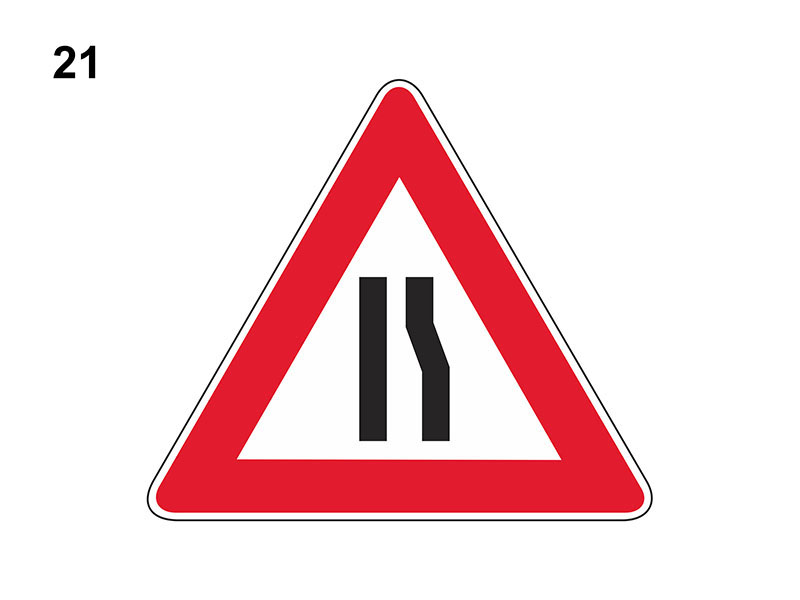

Strettoria asimetrica a destra

E' un segnale di pericolo che preannuncia (di norma a 150 metri) una strettoia asimmetrica a destra, ossia un restringimento sul lato sinistro della carreggiata, con probabile difficoltà di incrocio con i veicoli provenienti dal senso opposto.
Se a fondo giallo, è posto in presenza di un cantiere stradale.
Comporta di moderare la velocità e se necessario arrestarsi.
Non è vero che preannuncia un senso unico alternato con l'obbligo di dare la precedenza ai veicoli provenienti dall'altro senso.
Se a fondo giallo, è posto in presenza di un cantiere stradale.
Comporta di moderare la velocità e se necessario arrestarsi.
Non è vero che preannuncia un senso unico alternato con l'obbligo di dare la precedenza ai veicoli provenienti dall'altro senso.